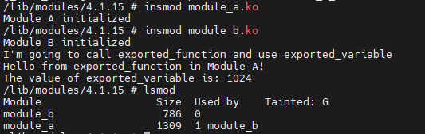

驱动开发-设备驱动模块
LINUX设备驱动模块
设备驱动程序，就是驱使设备按照用户的预期进行工作的软件，它是应用程序与设备沟通的桥梁。设备驱动程序主要负责硬件设备的参数配置、数据读写与中断处理。
Linux中的大部分驱动程序是以内核模块的形式编写的。内核模块是Linux 内核向外部提供的一个接口，其全称为动态可加载内核模块（Loadable Kernel Module，LKM）。
驱动程序的加载方式
内核模式
将新驱动程序编译进内核，需要修改内核代码和编译选项，这种方式将驱动程序代码直接编译到内核镜像（zImage或uImage等）中，成为内核的一部分。
特点：
- 集成度高：驱动随内核启动自动加载，无法卸载。
- 性能稍好：省去了模块加载和解析的开销。
- 安全性/稳定性高：常用于系统最核心、必须的驱动（如根文件系统驱动）。
- 内核体积大：所有驱动都会被编译进去，导致内核镜像文件变大。
配置方法：通过内核的配置菜单（make menuconfig等）将对应的驱动选项配置为 y。
实验一
本次实验是通过静态添加自己编写的驱动如：beep.c/ap3216c.c/icm20608.c等驱动。
步骤一：
找到驱动放置的路径，将自己编写好的驱动放在这个路径下，一般是linux-kernel/drivers/xxx路径下：
- 蜂鸣器（beep）这种简单的字符设备，通常可以放在
linux-kernel/drivers/char/（老习惯）或linux-kernel/drivers/misc/（现在更常见）目录下。misc是“混杂设备”的意思，专门放置无法简单归类的简单字符设备驱动。 - I2C 客户端设备（如传感器）的驱动都放在这个目录或其子目录下。你可以直接放在
drivers/i2c/下，或者为其新建一个子目录，比如drivers/i2c/sensors/（如果有很多传感器驱动，这样管理更清晰）。 - SPI 设备驱动应放在
linux-kernel/drivers/spi/目录下。

步骤二：
修改对应目录的Kconfig和Makefile
Makefile文件
1
obj-$(CONFIG_CHAR_BEEP) += beep.o
解释：
- 如果在使用
make menuconfig的时候配置选项CONFIG_MISC_BEEP被设置为y，则将beep.o编译进内核。 - 如果被设置为
m，则将beep.o编译成模块 (beep.ko)。 - 如果未设置，则不编译。
- 如果在使用
kconfig文件
找到我们放置路径对应的文件夹下面的kconfig文件
1
2
3
4
5
6config CHAR_BEEP
tristate "CHAR BEEP Device Support"
default n
help
This is a simple beep driver for testing.
Say Y here if you want to support the beep.解释：
config MISC_BEEP：定义了一个配置符号，它必须与 Makefile 中的CONFIG_前缀后的名字完全一致。tristate：表示该配置有三种状态：y(内置),m(模块),n(不编译)。"MISC BEEP Device Support"：这是在make menuconfig中显示的菜单文本。default n：默认状态为不编译。help：后面的文字是帮助信息。
步骤三：
配置内核并编译
进入内核源码根目录
启动配置菜单：
1
make menuconfig
在菜单中找到你的驱动：
根据你在
Kconfig中设置的路径，你的驱动会出现在相应的子菜单中。例如，beep驱动会在：Device Drivers -> [*] Character devices -> <*> CHAR BEEP Device Support使用空格键将选项设置为
<*>(编译进内核) 或<M>(编译为模块)。(Pressingincludes, excludes, modularizes features) 
保存配置并退出
编译内核
1
make -j$(nproc) # 使用所有CPU核心进行编译，加快速度
步骤四：
更新你的开发板系统：将新编译的内核镜像烧写或拷贝到你的开发板上，并重启。cp zImage /tftpboot/
对其他驱动的操作：对 ap3216c.c 和 icm20608.c 进行完全相同的操作，只不过是在它们对应的 drivers/i2c/ 和 drivers/spi/ 目录下的 Kconfig 和 Makefile 中进行修改。配置符号的名字可以自己定，但要清晰易懂，例如 CONFIG_I2C_AP3216C 和 CONFIG_SPI_ICM20608。
动态加载与卸载
这是驱动开发调试阶段最常用、最灵活的方式。驱动程序被编译成 .ko (Kernel Object) 文件，而不是直接链接进内核镜像。
特点：
- 灵活性高：可以在系统运行时动态地加载和卸载，无需重启系统。
- 节省内存：不需要的驱动可以不加载，减少内核占用内存。
- 易于调试：开发调试周期短，修改代码后重新编译并加载即可。
常用命令：
insmod：最基础的加载命令，sudo insmod beep.ko。但它不解决模块依赖。modprobe：更智能的加载命令，它会自动从lib/modules/$(uname -r)目录查找并加载模块所依赖的其他模块。需要先运行depmod生成模块依赖关系。rmmod：卸载模块，sudo rmmod beep。lsmod：查看当前已加载的所有模块。
模块的编写
模块的加载与卸载
1 | module_init(XXX_init);//注册模块加载函数 |
**module_exit()**函数用来向Linux内核注册一个模块加载函数，参数xxx_init就是需要注册的具体函数，当使用“insmod”、”modprobe”命令加载驱动的时候，xxx_init 这个函数就会被调用；
**module_exit()**函数用来向Linux内核注册一个模块卸载函数，参数xxx_exit 就是需要注册的具体函数，当使用“rmmod”命令卸载具体驱动的时候xxx_exit 函数就会被调用。
1 | static int __init xxx_init(void) |
一个典型的字符串驱动模块：
1 |
|
编写它对应的Makefile文件：
1 | KERNELDIR := /home/arm-linux/MX6U/linux-core |
带参数的可加载模块
向动态加载的Linux内核模块传递参数是一个非常常用且强大的功能，特别是在调试和配置驱动时。它允许你在不重新编译模块的情况下改变其行为。
内核提供了一组宏（定义在 linux/moduleparam.h 头文件中），让你在模块代码中声明参数。加载模块时，insmod 或 modprobe 命令就可以接收这些参数的值。
在模块代码中声明参数
最基本的宏是 module_param，其语法如下：
1 | module_param(name, type, perm); |
name：参数的名称（也是模块内部的变量名）。type：参数的数据类型。常见的有：bool：布尔值（true/false）int：整型uint：无符号整型long：长整型ulong：无符号长整型charp：字符指针（即字符串），内核会为它动态分配内存。array：数组（需要配合module_param_array使用）
perm：指定在/sys/module/<module_name>/parameters/目录下对应参数文件的权限。这用于在模块加载后，通过sysfs文件系统查看或修改参数。S_IRUGO：只读（用户、组、其他都可读）S_IWUSR： root用户可写（通常与S_IRUGO用|组合，如S_IRUGO | S_IWUSR）0：完全不在sysfs中创建该参数的入口，参数只能在加载时设置。
加载模块时传递参数
使用 insmod 或 modprobe 命令时，使用 参数名=值 的格式来传递。
insmod(需指定完整路径):1
sudo insmod /path/to/my_module.ko param1=value1 param2=value2
modprobe(在模块搜索路径中查找，更常用):1
sudo modprobe my_module param1=value1 param2=value2
使用
modprobe前，通常需要先运行sudo depmod -a来更新模块依赖信息。
具体示例
步骤 1:
在驱动代码中 (beep.c) 声明参数
1 |
|
步骤 2
编译模块并查看参数信息
编译后，你可以使用 modinfo 命令查看模块的信息，其中就包括我们定义的参数及其描述：
1 | modinfo beep.ko |
输出会类似这样：
1 | filename: /.../beep.ko |
步骤 3：
加载模块并传递参数
示例 1：使用默认参数加载
1 | insmod beep.ko |
示例 2：在加载时指定自定义参数
1 | insmod beep.ko debug_level=2 device_name="my_cool_buzzer" |
步骤 4：
在 Sysfs 中查看和修改参数
模块加载后，参数会出现在 /sys/module/ 目录下：
1 | ls /sys/module/beep/parameters/ |
由于我们在声明 debug_level 时设置了 S_IWUSR 权限，root 用户甚至可以在模块运行时动态修改它（如果驱动代码设计为能响应这种实时变化）：
1 | sudo su |
传递数组
module_param_array 允许你传递一个数组。
1 | static int my_array[5]; |
加载时这样传递：
1 | sudo insmod my_module.ko my_array=10,20,30,40,50 |
内核会自动解析逗号分隔的值，并将实际元素数量填入 array_size 变量中。
模块的依赖
Linux内核模块之间可以相互引用一些符号，这些符号包括函数与变量。
特点：
- 一个模块引用其他模块的符号，称为模块依赖关系。
- 被引用的模块必须先安装，引用模块才能安装。
内核使用宏定义EXPORT_SYMBOL 导出变量与函数
EXPORT_SYMBOL(symbol_name)仅将符号导出给那些**使用 GPL 兼容许可证**（如 `GPL`, `Dual MIT/GPL` 等）的模块。这是一种强制性的“开源策略”，如果你希望你的模块只被开源社区使用，而不希望闭源模块使用你的代码，就应该用这个宏。1
2
3
4
5
将符号 `symbol_name` 导出到全局符号表。**所有其他模块**（无论其许可证是什么）都**可以看到并使用**这个符号。
- ```c
EXPORT_SYMBOL_GPL(symbol_name)EXPORT_SYMBOL_NS(symbol_name, namespace_name)1
2
3
4
5
6
7
8
9
10
11
12
13
14
15
16
17
18
19
20
21
22
23
24
25
26
27
28
29
30
31
32
33
34
35
36
37
38
39
40
41
42
43
44
45
46
47
48
49
50
51
52
53
54
55
56
57
58
59
60
61
将符号导出到一个特定的命名空间（namespace）。这提供了更好的符号封装和避免命名冲突的能力。只有导入了相应命名空间的模块才能看到和使用这个符号。
```c
/****************** 符号提供者 *************************/
#include <linux/init.h>
#include <linux/module.h>
#include <linux/printk.h>
// 1. 定义一个将要被导出的函数
void exported_function(void)
{
pr_info("Hello from exported_function in Module A!\n");
}
EXPORT_SYMBOL(exported_function); // 导出函数
// 2. 定义一个将要被导出的变量
int exported_variable = 1024;
EXPORT_SYMBOL(exported_variable); // 导出变量
static int __init module_a_init(void)
{
pr_info("Module A initialized\n");
return 0;
}
static void __exit module_a_exit(void)
{
pr_info("Module A exited\n");
}
module_init(module_a_init);
module_exit(module_a_exit);
MODULE_LICENSE("GPL");
MODULE_AUTHOR("KEVIN");
MODULE_DESCRIPTION("A module that exports symbols");
/**************** 符号消费者 **********************/
#include <linux/init.h>
#include <linux/module.h>
#include <linux/printk.h>
// 声明外部符号（编译器，这个符号在其他地方定义）
extern void exported_function(void);
extern int exported_variable;
static int __init module_b_init(void)
{
pr_info("Module B initialized\n");
// 使用从 Module A 导入的符号
pr_info("I'm going to call exported_function and use exported_variable\n");
exported_function(); // 调用外部函数
pr_info("The value of exported_variable is: %d\n", exported_variable); // 使用外部变量
return 0;
}
static void __exit module_b_exit(void)
{
pr_info("Module B exited\n");
}
module_init(module_b_init);
module_exit(module_b_exit);
MODULE_LICENSE("GPL");
MODULE_AUTHOR("KEVIN");
MODULE_DESCRIPTION("A module that uses symbols from Module A");
实验步骤：
错误的加载顺序（先加载依赖者）
1
insmod module_b.ko
结果：
使用
dmesg查看内核日志，你会看到明确的错误信息：分析：加载
module_b时，内核找不到exported_function和exported_variable这两个符号的定义，因为它们的提供者module_a还没有被加载。加载失败。正确的加载顺序（先加载提供者，再加载依赖者）
1
2
3
4
5
6
7
8
9
10
11# 1. 先加载提供符号的模块
sudo insmod module_a.ko
# 检查 dmesg： Module A initialized
# 2. 再加载依赖它的模块
sudo insmod module_b.ko
# 检查 dmesg：
# Module B initialized
# I'm going to call exported_function and use exported_variable
# Hello from exported_function in Module A!
# The value of exported_variable is: 1024
成功！
module_b找到了它所需的符号，并成功执行。查看模块依赖关系（
lsmod）1
2
3
4/lib/modules/4.1.15 # lsmod
Module Size Used by Tainted: G
module_b 786 0
module_a 1309 1 module_bUsed by列清晰地显示了依赖关系：module_a被module_b使用。卸载的时候要先卸载使用引用功能的模块
使用
modprobe自动处理依赖1
2
3
4
5
6
7
8depmod
# 现在，使用 modprobe 加载 module_b
sudo modprobe module_b
# 检查 dmesg，你会看到：
# Module A initialized
# Module B initialized ... (所有日志)